01
Barbary macaques · Gibraltar
What does a monkey see in the mirror?
How macaques explore and manipulate mirrors and reflective objects. This is the core of my Cambridge PhD.
self-directed behaviour
Primatologist-in-training. I watch monkeys and apes think, squabble and make up, then ask what that tells us about the human mind and mental health.
I'm a PhD student in Biological Anthropology at Darwin College, Cambridge, working with Dr Sylvain Lemoine.
I grew up around community mental health care, and that's a big part of why I came to primatology. If we understand how other primates cope with stress, isolation and social life, we get a deeper view of what's going on in our own minds.
Before Cambridge I did an MSc in Human Evolution and Behaviour at UCL and a BA at UNC Chapel Hill. Along the way I've been an EMT and a surf instructor. I'm a Wilmington, NC kid at heart.
My work links primatology and mental health through comparative cognition: how minds are built, how bonds form, and what happens when either goes wrong.
How macaques explore and manipulate mirrors and reflective objects. This is the core of my Cambridge PhD.
A multi-site replication of the cylinder task, looking at how inhibitory control varies with sex and rank. That's me running a trial.
Whether grooming vulnerable body parts tracks how strong the bond between two partners is.
Focus groups with UK psychiatrists on where evolutionary thinking helps in the clinic and where it doesn't, plus how adolescence, culture and isolation shape mental health across species.
Mirror and cognition work for my PhD, University of Cambridge.
Cognition experiments with the Wildlife Research Center, Kyoto University.
Drone observation of horse groups with Kyoto University.
Field training for Kyoto University at the Awajishima Monkey Center.
Grooming, trust and social bonds in a desert troop.
Activity budgets, nesting and fire ecology.
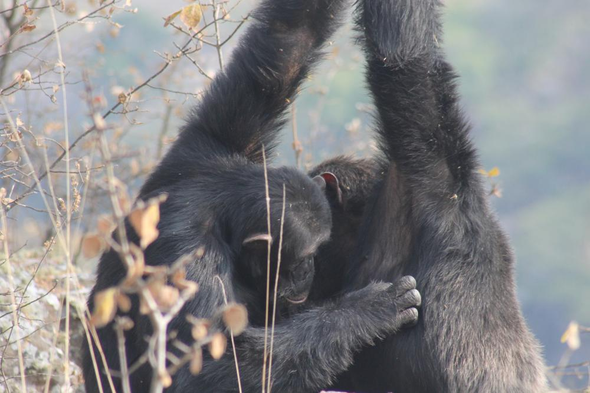
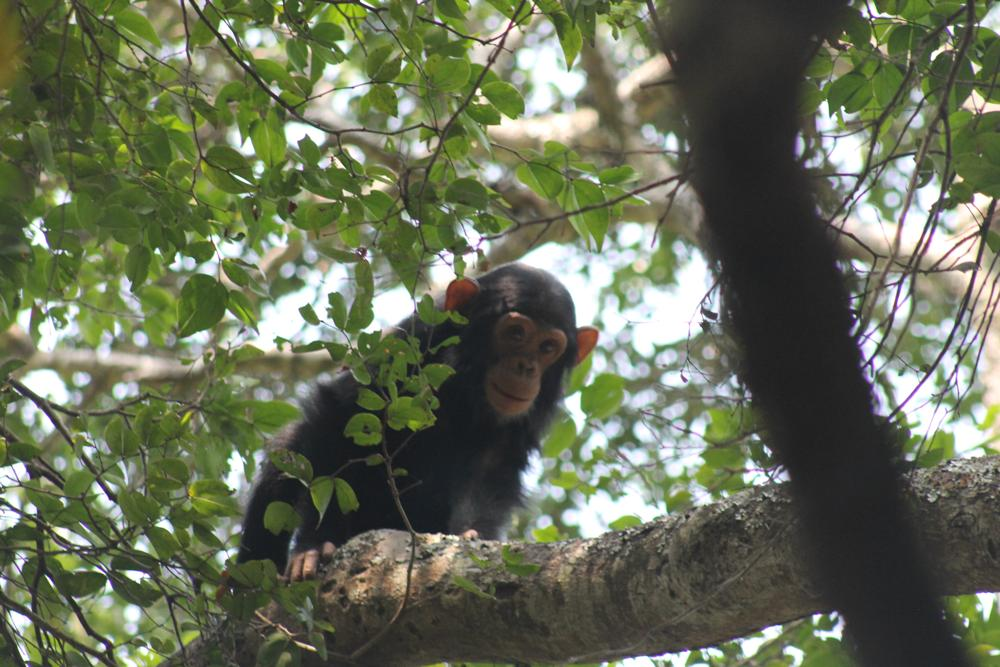
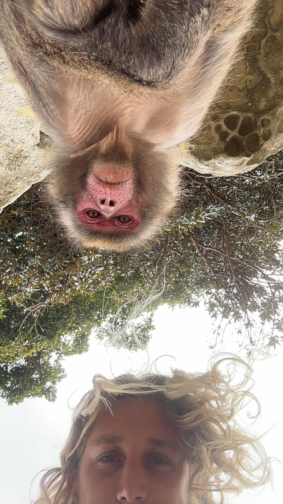
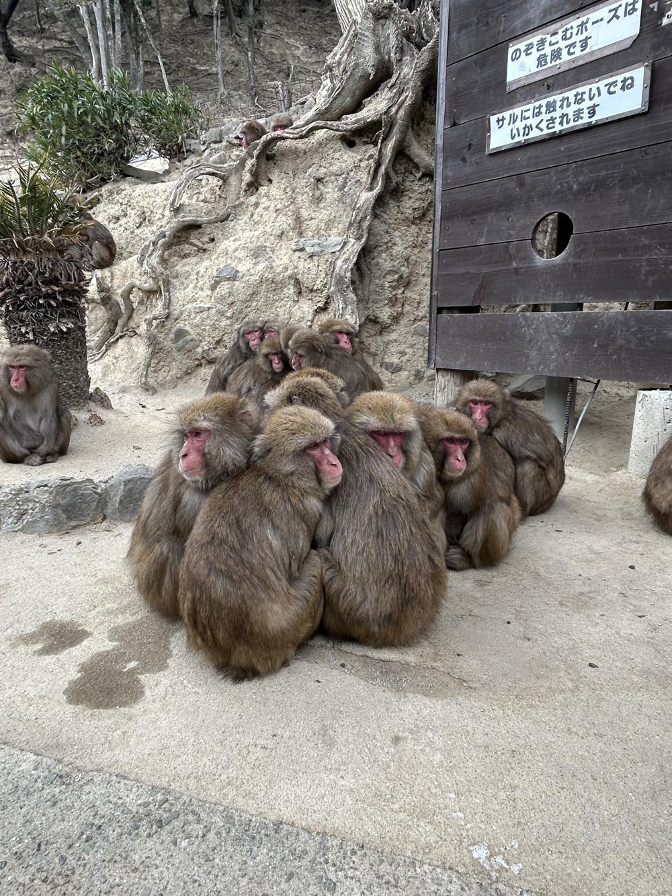
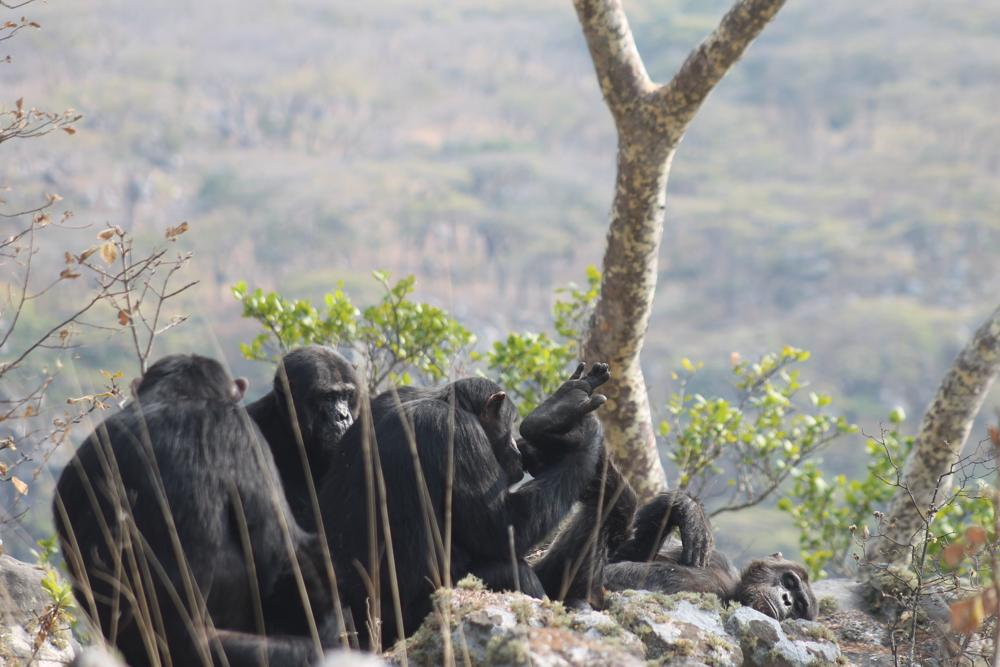
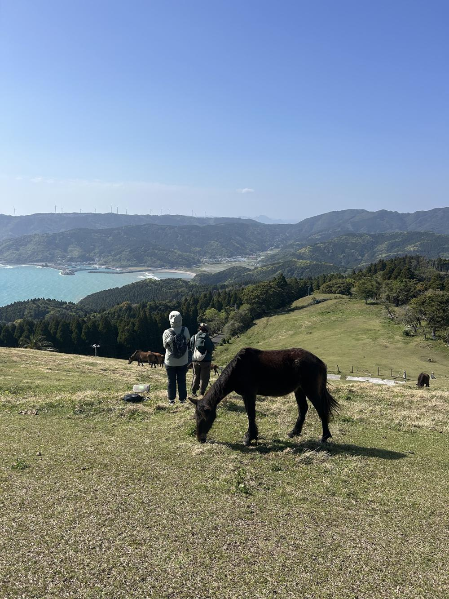
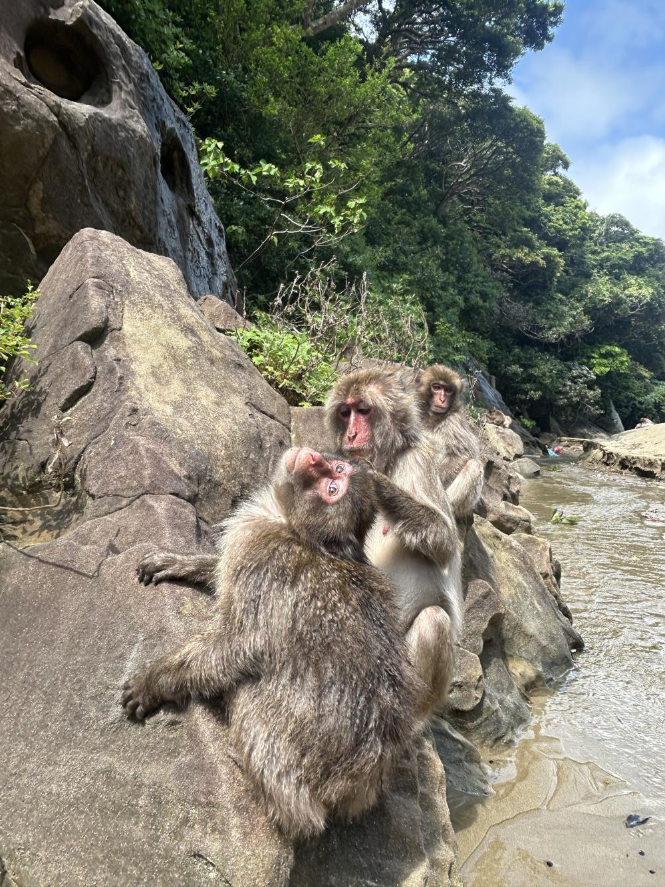
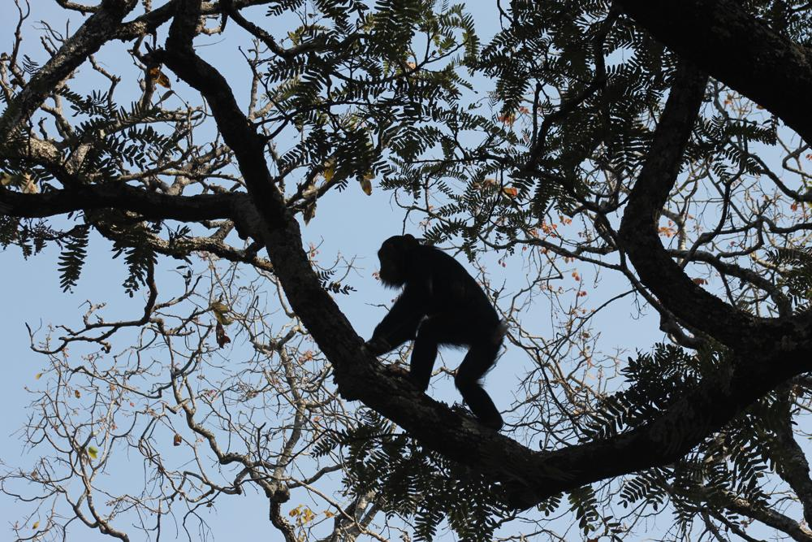
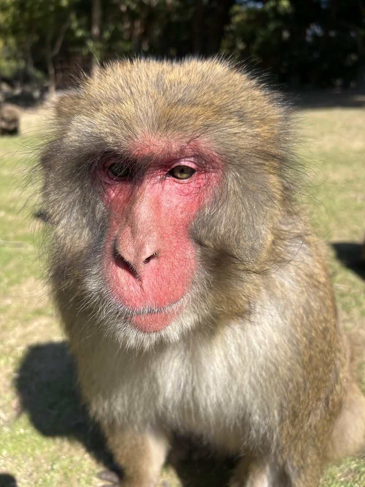
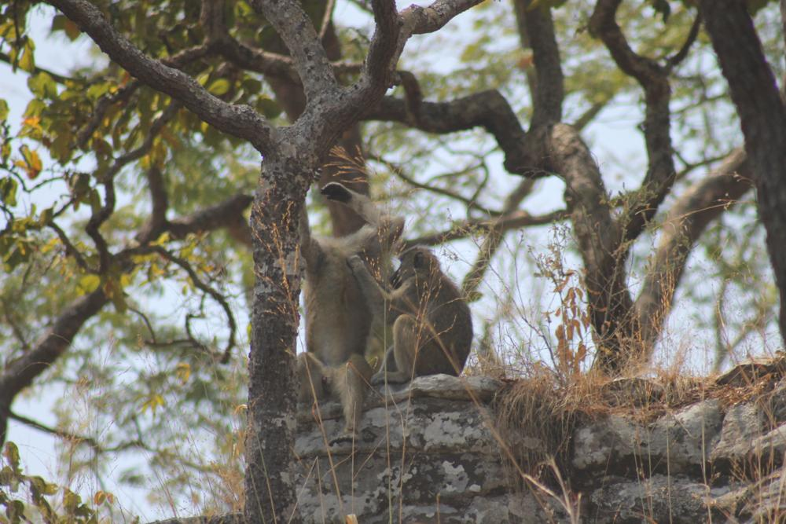
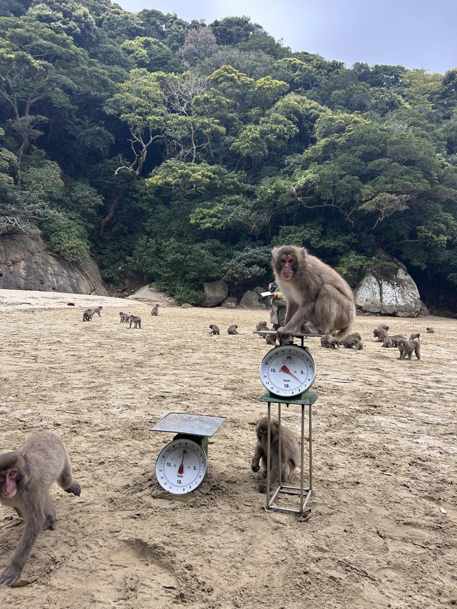
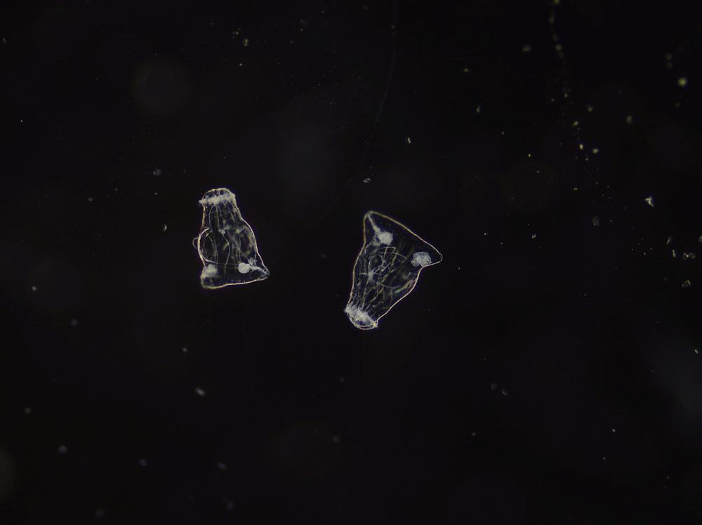
Always happy to hear from people working on primate behaviour, comparative cognition or evolutionary approaches to mental health.